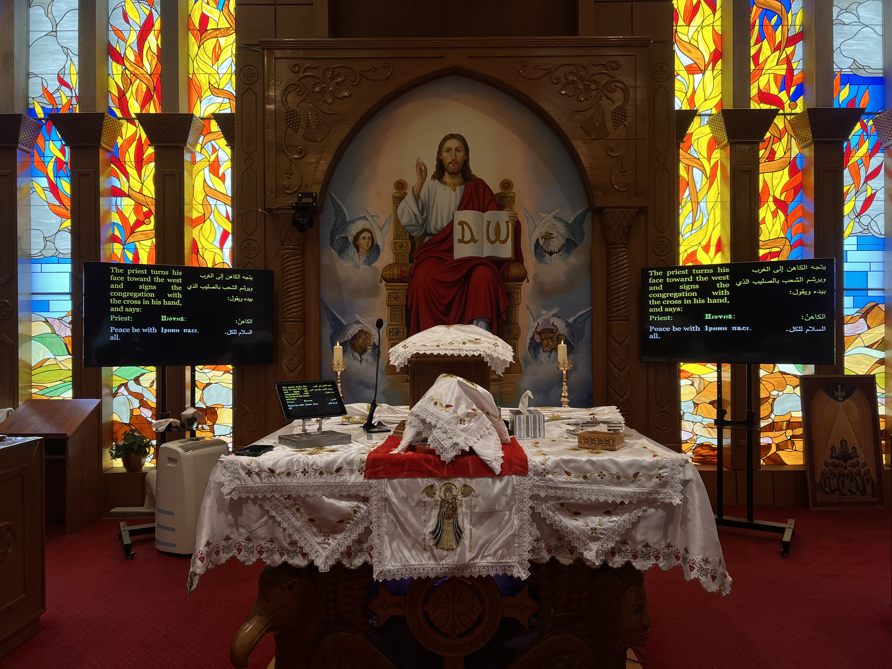

A Coptic Orthodox parish in Des Moines, Iowa, rooted in ancient worship and a growing community of faith.
Our Story
A Community Growing in Christ
There has been a Coptic Orthodox community in Des Moines since the 1970s. What began with only a few immigrant families, who would host a visiting priest from Minnesota twice a month, has grown over more than forty years into a thriving parish community.
In recent years, St. Mary has continued to grow, welcoming many new members and families into the life of the Church.

St. Mary Coptic Orthodox Church in Des Moines, Iowa.
A Coptic Orthodox Community in Iowa
Faith Carried Across Generations
1970sCoptic Orthodox families began gathering in Des Moines.2017The community moved from Urbandale to its current church home.IowaSt. Mary is the only Coptic Orthodox church in the state.
In early 2017, the community moved from its former church in Urbandale into a building that once housed Des Moines' Orthodox Jewish community, Beth El Jacob. While signs of the building's synagogue history remain, St. Mary continues to make the space its own as a house of Orthodox Christian worship.
Worship at St. Mary
Ancient Prayer, Living Faith
Upon entering the worship space, visitors are welcomed by the fragrance of incense and the uniquely beautiful chanting of the Coptic language. During the Divine Liturgy, the faithful face east, toward the altar and the stained-glass depiction of the burning bush, one of the remaining features from the building's earlier life as a synagogue.
The altar is the focal point of worship. It holds a large icon of Jesus Christ, an icon of St. Mary, and a golden cross, drawing the prayers and attention of the whole congregation throughout the service.
The Only Coptic Orthodox Church in Iowa
A Parish That Draws Families from Across the State
To be Coptic, most basically, is to be an Egyptian Christian. Many members of the community are immigrants from Egypt, each carrying stories of faith, sacrifice, perseverance, and hope.
Because St. Mary is the only Coptic Orthodox church in Iowa, many parishioners drive several hours each Sunday to attend the Divine Liturgy and share in the life of the Church.
Visit Us
You Are Welcome Here
Whether you are Orthodox, exploring Christianity, new to the area, or simply curious about the ancient worship of the Coptic Church, we would be honored to welcome you.